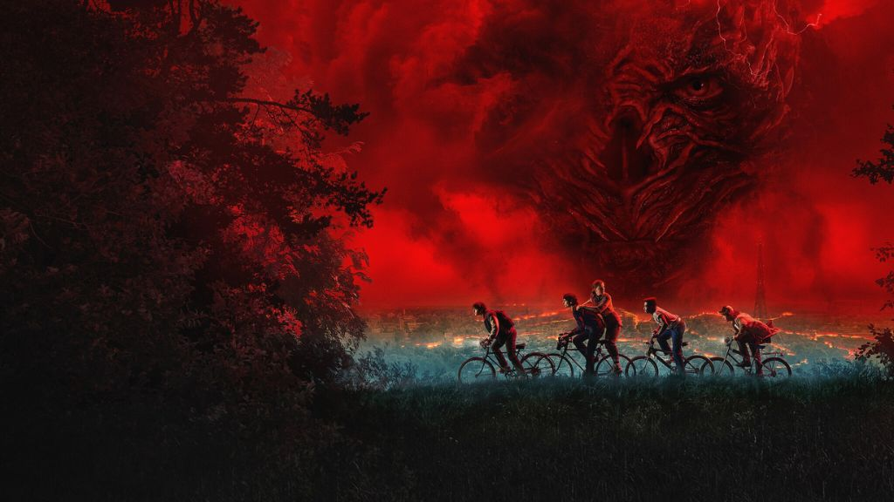

The Last Descent into the Upside Down

Since its debut back in 2016, Stranger Things has loomed over Netflix like a neon-lit monolith, so nobody expected its farewell to be subtle. Instead, the series makes its final bow as if stepping onto a glowing '80s stage: in three dramatic acts tailored to stretch anticipation, fuel subscription spikes, and feed the wild churn of fan speculation. The first four episodes dropped, the next three arrive wrapped like a Christmas gift, and a two-hour finale is due to ring in New Year's Eve. For viewers in North America, the endgame even hits the silver screen-a bold, almost retro flourish suggesting the show has evolved far beyond mere "event television."
And honestly, based on the expansive first volume, the cinema treatment feels less like a stunt and more like a natural evolution. Three of the episodes run at feature length, the fourth nearly so, and every frame glows with the kind of craftsmanship you can feel - right down to the gloriously crimped perms and unapologetic mullets. Rumours that the Duffer Brothers were armed with $60 million per episode suddenly seem less like gossip and more like fact.
Spoilers remain as hazardous as a stroll through the Upside Down, but here’s a safe glimpse: the story leaps ahead to 1987, a year and a half after the explosive events of season four. Hawkins’ tight-knit band of teens is now bracing for their ultimate confrontation with Vecna, whose eerie calm and sharpened supernatural menace make him even more unsettling than before. Meanwhile, our heroine Jane “Eleven” Hopper trains with the gritty determination of an ’80s underdog hero—much to the anxious dismay of Joyce and Hopper, now united in their parental worry.
Around them, deeply human threads continue to ground the high-concept chaos. Dustin staggers under the grief of losing Eddie, the metalhead friend who became a season-four legend. Robin quietly faces the fears and freedoms of stepping into her own identity. Their struggles unfold against a lovingly rendered ’80s backdrop in which details matter, from Tiffany’s 1987 hit “I Think We’re Alone Now,” which becomes an emotional heartbeat in episode three, to Linda Hamilton, an icon of the era, arriving in a sly, meta casting twist as the enigmatic Dr. Kay. Volume one may feel like the first course to the season’s greater feast, but it still pulses with the show’s trademark blend of spectacle, sincerity, and supernatural thrill. Few shows feel like they have the kind of staying power to wholly upend your world after nearly a decade; Stranger Things is one of them.
This dispatch was last updated on November 30, 2025